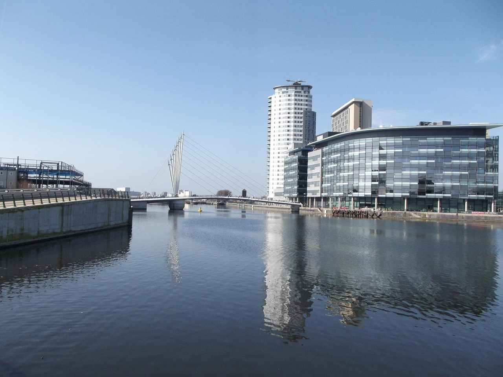

Salford Quays
Located just outside Manchester city centre, Salford Quays is a vibrant waterfront destination packed with culture, architecture, and entertainment.
Media & Culture Hub
Salford Quays is home to MediaCityUK, a hub of broadcasting where BBC and ITV have major studios. It's a thriving place where creativity comes to life.
Also in the area is The Lowry Theatre, a hotspot for drama, comedy, and art, and the impressive Imperial War Museum North designed by Daniel Libeskind.
Waterfront Views & Dining
Take a walk along the canal, relax by the waterfront, or enjoy fine dining and cafes with a scenic view. With its modern vibe and relaxed atmosphere, it's perfect for locals and visitors alike.